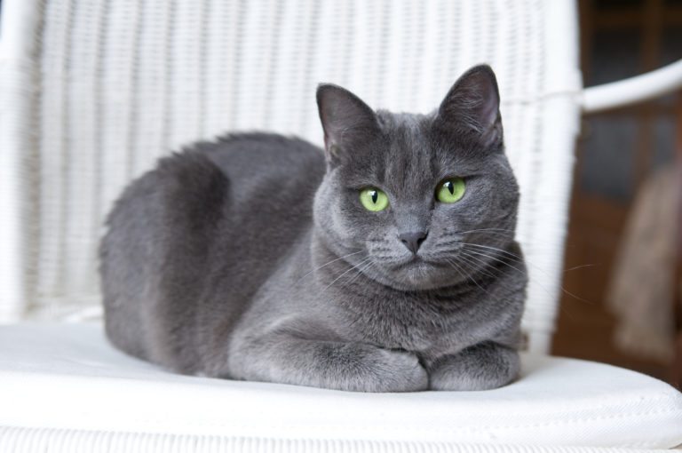

Quantum Cats Wordl
Sobre Quantum Cats Wordl
La finalidad de Quantum Cats Wordl es que todo amante a los felinos conozca el origen de los gatos, las 10 razas más cariñosos del mundo en el cual tenemos un Top 10 que son: Fold Escoces, Sphynx, Maine Coon, Ragdoll, Siamés, Persa, Bombay, Tonkinés, Americano de pelo Corto, Birmano, Azul Ruso y Munchkin, asi como tambien un apartado con images de varios de ellos.
Top 10 de las razas de gatos más cariñosos
-
Fold Escoces

-
Sphynx
-
Maine Coon
-
Ragdoll

-
Siamés

-
Persa

-
Bombay

-
Tonkinés
-
Americano de pelo corto

-
Birmano

-
Azul Ruso
 -
Munchkin

Otras razas de gatos cariñosos
A pesar de haber razas caracterizadas como las más cariñosas, los gatos son animales excepcionales y cada uno desarrolla su propio carácter y gustos. Aún así, aparte de las ya mencionadas, estas son otras razas de gatos especialmente cariñosos, en general pues cada gato tiene rasgos individuales, que estarán deseando recibir tu atención si los adoptas:
- Kinkalow
- Bosque de Noruega
- Angora
- Somalí
- Romano
- Habana
- Siberiano